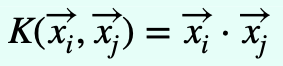
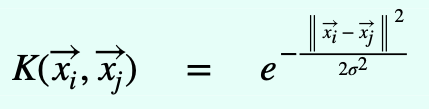
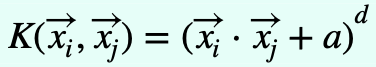
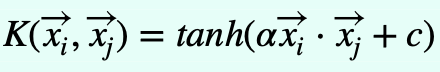

Support Vector Machines
The Mr. Perfect of Machine Learning Classifiers.
Description
A Support Vector Machine is different from other Machine Learning Classifiers because it aims to create the widest possible street between the two types of examples that does not touch or contain any point.
Playground
Instructions:
- Click for adding a yellow point.
- Shift + Click for adding a blue point.
- Press c for clearing all the points you added.
- Press R to switch to the Gaussian kernel.
- Press P to switch to the Polynomial kernel.
- Press S to switch to the Sigmoid kernel.
- Press L to switch back to the Linear kernel.
Description:
- You can use the sliders below to change the value of the parameters.
- C is the cost parameter for hard-margin classification. A large C means less misclassifcations are allowed.
- Sigma is the standard deviation of the Gaussian Kernel being used. A large sigma means higher reach for each point.
- Degree is the degree of the polynomial kernel being used.
- a is the constant term being added to the dot product as shown in the equation for polynomial kernel.
- alpha, and c are as shown in the equation




C = 10.0
Gaussian Kernel sigma = 1.0
Polynomial Kernel degree = 3
Polynomial Kernel a = 1.0
Sigmoid Kernel alpha = 0.32